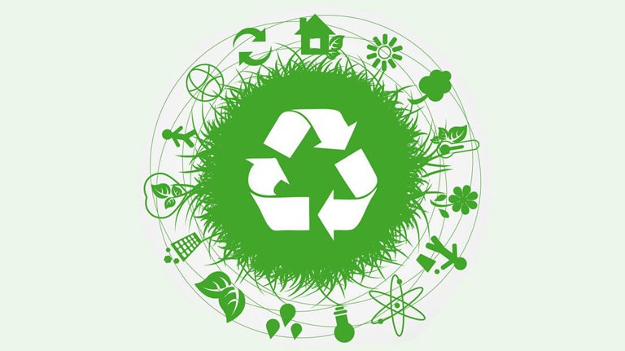
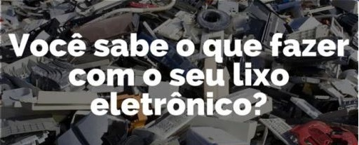

LIXO ELETRÔNICO
O que é a reciclagem?
Reciclagem é o processo em que há a transformação do resíduo sólido que não seria aproveitado, com mudanças em seus estados físico, físico-químico ou biológico, de modo a atribuir características ao resíduo para que ele se torne novamente matéria-prima ou novos produtos.

Você sabe o que é e-lixo?
São produtos elétricos e eletrônicos danificados, quebrados ou sem utilidade por algum motivo que devem ser descartados. A tecnologia está em constante transformação. Novos equipamentos surgem em ritmo acelerado; mais rápidos, mais práticos e mais modernos. À medida que uma tecnologia é substituída, muitos objetos tornam-se obsoletos e são descartados.

É comum, hoje em dia, trocamos de celular a cada ano, comprarmos um computador mais moderno, uma TV maior para a sala, eletrodomésticos que facilitam a vida, e vários outros aparelhos eletrônicos que estão presentes no dia a dia.
O que fazer?
Muitas pessoas chegam em um empasse quando se veem diante da pergunta: O que eu faço com o meu lixo eletrônico? Nessas horas, a melhor coisa a se fazer é pesquisar sobre, afinal, o e-lixo é bem diferente do lixo comum.

O lixo eletrônico necessita de um descarte especial, e por isso ele deve ser levado até pontos de coleta específicos, que devem haver na sua cidade. Ele não deve ser descartado como lixo comum, ou seja, não deve ir no caminhão de lixo.
O aconselhável é que, você separe os materiais que podem e os que não podem ser reciclados, e também separar os materiais elétro-eletronicos. E em seguida leve para a empresa responsável por fazer essa reciclagem. Deve-se evitar de descartar o seu e-lixo na natureza, afinal os danos ambientais que esse material pode causar na natureza é imenso .
Problemas causados pelo descarte inadequado:
Este descarte é feito quando o equipamento apresenta defeito ou se torna obsoleto (ultrapassado). O problema ocorre quando este material é descartado no meio ambiente. Como estes equipamentos possuem substâncias químicas (chumbo, cádmio, mercúrio, berílio, etc.) em suas composições, podem provocar contaminação de solo e água.

Além do contaminar o meio ambiente, estas substâncias químicas podem provocar doenças graves em pessoas que coletam produtos em lixões, terrenos baldios ou na rua.
Estes equipamentos são compostos também por grande quantidade de plástico, metais e vidro. Estes materiais demoram muito tempo para se decompor no solo.